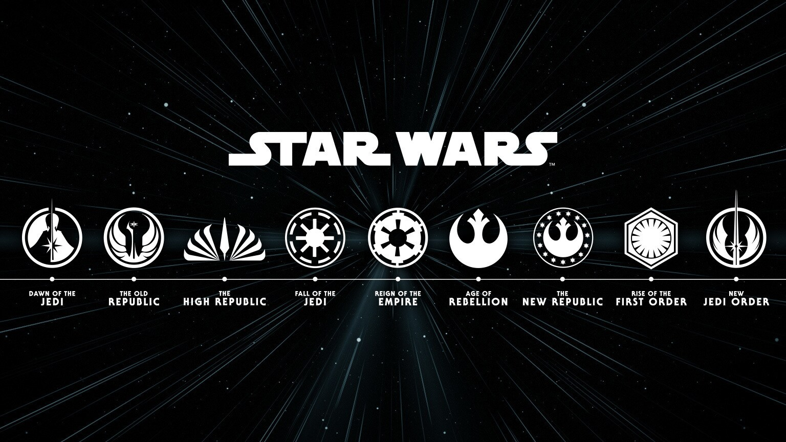

Star Wars, conocida también en español como "La guerra de las galaxias", es una franquicia y
universo compartido de fantasía compuesta primordialmente de una serie de películas concebidas por el
cineasta estadounidense George Lucas en la década de 1970, y producidas y distribuidas inicialmente por
20th Century Fox y posteriormente por The Walt Disney Company a partir de 2012.
2. Inspiración
Lucas se inspiró en diversos elementos para crear la saga, como la caballería medieval, la sociedad
feudal, los combates aéreos de la Segunda Guerra Mundial, y películas de Kurosawa. Otros elementos que
lo inspiraron fueron: la caballería medieval y la sociedad feudal, los combates aéreos de la Segunda
Guerra Mundial, las películas de Kurosawa, el movimiento hippie, la presidencia de Nixon en Estados Unidos.
STAR WARS
Creador
George Lucas
Trabajo original
Star Wars (1997)
Franquicia
Películas
Series de televisión
Parques de atracciones
Cómics
Novelas
Videojuegos
Juguetes
3. Trama
Su trama describe las vivencias de un grupo de personajes que habitan en una galaxia ficticia e
interactúan con elementos como «la Fuerza», un campo de energía metafísico y omnipresente que posee
un «lado oscuro» provocado por la ira, el miedo y el odio.
Datos curiosos:
El 4 de mayo fue elegido como el «Día de la Guerra de las Galaxias», debido a que dicha fecha suena
en inglés parecido al principio de la frase «May the force be with you» (que la fuerza te acompañe).
George Lucas creía que su película, Star Wars, no sería un éxito de taquilla. Por ese motivo prefirió
irse de vacaciones a Hawái con Steven Spielberg en lugar de acudir a su estreno.
El apellido de Skywalker iba a ser Starkiller, pero esto le pareció muy violento a George Lucas.
la palabra Jedi deriva de la palabra japonesa Jidaigeki, drama de época ambientado en la era de los samuráis.
El personaje de Chewbacca está inspirado en el perro de George Lucas de raza Alaskan Malamute.
1. Episodio IV: Una Nueva Esperanza (1977)
Luke Skywalker descubre su destino como Jedi mientras se une a la Rebelión para destruir la Estrella de la Muerte, enfrentando al Imperio liderado por Darth Vader.
2. Episodio V: El Imperio Contraataca (1980)
El Imperio ataca a la Alianza Rebelde. Luke entrena con Yoda y enfrenta a Vader, descubriendo que es su padre.
3. Episodio VI: El Retorno del Jedi (1983)
La Rebelión derrota al Imperio tras la destrucción de la segunda Estrella de la Muerte, mientras Luke redime a su padre, Anakin Skywalker.
Trilogía de precuelas
4. Episodio I: La Amenaza Fantasma (1999)
Obi-Wan Kenobi y Qui-Gon Jinn descubren al joven Anakin Skywalker, un niño con un gran futuro como Jedi, mientras luchan contra los Sith y la Federación de Comercio.
5. Episodio II: El Ataque de los Clones (2002)
Anakin y Padmé se enamoran mientras se desata una guerra entre la República y los separatistas liderados por el Conde Dooku.
6. Episodio III: La Venganza de los Sith (2005)
Anakin se une al lado oscuro, convirtiéndose en Darth Vader, mientras el Emperador Palpatine toma el control de la galaxia.
Trilogía secuela
7. Episodio VII: El Despertar de la Fuerza (2015)
Rey, una chatarrera, descubre su conexión con la Fuerza y se une a la Resistencia para enfrentar a la Primera Orden y Kylo Ren.
8. Episodio VIII: Los Últimos Jedi (2017)
Rey busca a Luke Skywalker para que la entrene, mientras la Resistencia lucha por sobrevivir contra la Primera Orden.
9. Episodio IX: El Ascenso de Skywalker (2019)
Rey enfrenta al Emperador Palpatine, quien regresa para retomar el control de la galaxia. La Resistencia triunfa, y Rey adopta el legado de los Skywalker.

6. Orden cronológico
'The Acolyte' (TV)
'Star Wars: Episodio I - La amenaza fantasma' (George Lucas, 1999)
'Star Wars: Episodio II - El ataque de los clones' (George Lucas, 2002)
'Star Wars: The Clone Wars' (TV)
'Star Wars: Episodio III - La venganza de los sith' (George Lucas, 2005)
'Star Wars: La remesa mala' (TV)
'Han Solo: Una historia de Star Wars' (Ron Howard, 2018)
'Obi-Wan Kenobi' (TV)
'Star Wars Rebels' (TV)
'Andor' (TV)
'Rogue One: Una historia de Star Wars' (Gareth Edwards, 2016)
'La guerra de las galaxias' (George Lucas, 1977)
'El imperio contraataca' (Irvin Kershner, 1980)
'El retorno del Jedi' (Richard Marquand, 1983)
'Star Wars Resistance' (TV)
'The Mandalorian' (TV)
'El libro de Boba Fett' (TV)
'Ahsoka' (TV)
'Star Wars: El despertar de la Fuerza' (J.J. Abrams, 2015)
'Star Wars: Los últimos Jedi' (Rian Johnson, 2017)
'Star Wars: El ascenso de Skywalker' (J.J. Abrams, 2019)